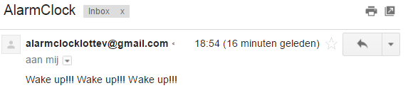

Projectstatus
Hier kan je de verschillende fases van mijn project opvolgen.
Fase 1
In deze fase gaan we aan onze arduino een scherm hangen. Op dit scherm gaan we de tijd + datum kunnen aflezen, alsook de temperatuur.
25/11/2016
Vandaag heb ik eindelijk mijn Arduino Uno Wifi aangekregen, dus kon ik beginnen met het maken van mijn wekker.
Om te beginnen moet ik de RTC DS1307 zelf in elkaar steken, dat betekent dus solderen! Iets wat ik nog nooit gedaan heb.
Na even oefenen heb ik mij gewaagd aan het solderen van alle pins op de DS1307. Al bij al is het nog vrij goed gelukt voor een eerste keer.
Nu de RTC DS1307 in elkaar steekt, kunnen we gaan testen of alles goed is gelopen.
Om de een of andere reden werkt de RTC DS1307 niet met de Arduino Uno Wifi. Ik heb geprobeerd om deze te testen met een voorbeeld van de RCTLib, maar de Arduino software wil dit niet compileren.
Als ik dit test met het gewone Arduino Uno board lukt dit wel, dus het probleem bevindt zich bij de wire.h library, bij het wifi board herkent hij deze library niet.
Voorlopig heb ik de DS1307 dus enkel getest met het Arduino Uno board, hierbij wordt er om de seconde in de COM3 de tijd en datum geprint.
De volgende stap is uitzoeken of ik dit werkende kan krijgen met het wifi board, en de datum + tijd printen om mijn SPI LCD.
28/11/2016
Vandaag heb ik het probleem met het wifi board opgelost. Dus momenteel krijg ik onderstaande output van de RTC module.
Volgende stap is dus het SPI LCD aansluiten zodat de datum en tijd daarop getoond worden ipv op de seriële monitor.
29/11/2016
Vandaag gaan we het SPI LCD aansluiten op de arduino zodat we de tijd en datum kunnen bekijken.
Het scherm heb ik via een 3-wire methode geconnecteerd met mijn Arduino Uno Wifi.
Na wat zoeken naar de juiste library heb ik een test kunnen uitvoeren met een voorbeeld uit deze library. Hieronder vindt u een filmpje daarover.
2/12/2016
Vandaag gaan we proberen om de tijd en datum dat we uit het RTC module krijgen op het scherm te tonen.
26/12/2016
Na een hele lange tijd aan problemen met het SPI scherm heb ik besloten om dit scherm te vervangen door het gewone 16x2 lcdscherm.
Dit is naar mijn mening ook gemakkelijk in gebruik, vooral met de setCursor-methode die in de LiquidCrystel library zit. Het nadeel is dat het meer connecties met het breadboard nodig heeft dan het SPI-scherm.
Door deze wijziging is het schema ook gewijzigd zoals je kan zien op de schema pagina.
Ik heb ook de DS1307 rtc module vervangen door de DS3231 rtc module. Dit omdat ik bij de DS1307 altijd 256:256 op het scherm te zien kreeg, waarschijnlijk omdat er toch iets is misgegaan tijdens het solderen.
Daarom heb ik de DS3231 module gekocht en nadat ik dit had aangesloten werkte dit prima.

Nu dat het scherm en de rtc module goed zijn aangesloten, gaan we de tijd en datum tonen op het lcd-scherm.

2/01/2017
Vandaag heb ik mij bezig gehouden om een menu te maken voor de wekker. Via deze menu kan je dan je alarmen instellen en bekijken.
Hieronder vindt je een video met een demonstratie van deze menu.
In bovenstaande video kan je de menu raadplegen en bekijken met de knoppen op het breadboard.
Nu gaan we elk menu-item uitwerken zodat het op een echte wekker begint te lijken.
De menu-items "Set alarm" en "Alarmen bekijken" zijn deels uitgewerkt.
Hieronder vindt u een demo van het instellen van een alarm.
Hieronder vindt u een demo van het bekijken van een alarm.
Fase 2
Nu we de tijd en datum kunnen aflezen en een alarm handmatig kunnen instellen, gaan we onze arduino verbinden via wifi.
Als het alarm dan afgaat van onze wekker wordt er een mail gestuurd naar een speciaal gemaakt emailadres.
12/01/2016
Ik heb beslist om de arduino uno wifi niet meer te gebruiken en deze te vervangen door een arduino uno met een wifi shield.
Nadat ik de firmware van het wifi-shield heb geupdate, kan ik het gebruiken om te connecteren met wifi.
Ik heb er ook nog een temperatuursensor bijgezet zodat je op het scherm kan zien hoe warm het in je kamer is.
Vandaag ben ik heel de dag bezig geweest om de arduino een mail te laten sturen als het alarm van de wekker afgaat.
Na een lange dag begaf ook ineens mijn lcd-scherm het, dus nog snel een nieuw lcd besteld, dat hopelijk maandag aankomt.
13/01/2016
De mail voor het alarm is ondertussen in orde zoals u hieronder kan zien.

14/01/2016
Vandaag gaan we werken aan de communicatie via MQTT. Ik heb de android applicatie al gemaakt, maar ik vind het vrij moeilijk om mosquitto aan de praat te krijgen op windows.
Ook de code op de arduino moet nog aangepast worden zodat we via de android applicatie het alarm kunnen instellen.
16/01/2016
Ondertussen is het de dag voor het examen en is mijn lcd-scherm nog altijd niet aangekomen.
Laat ons hopen dat het er morgenvoormiddag wel is!